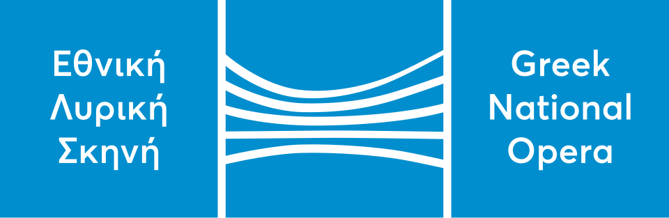

홈 > 브랜드 매거진 > Greek National Opera
Greek National Opera
그리스 국립 오페라(Greek National Opera)는 그리스의 국립 오페라단으로 오페라 공연예술 기관이다.
산업 분야 미디어·엔터테인먼트 · 공개 등급 자료 기반 · 브랜드 평가 4.1 ★

한눈에 보는 브랜드
그리스 국립오페라(Ethniki Lyriki Skini)는 그리스를 대표하는 국립 가극단으로, 1939년 코스티스 바스티아스의 주도로 설립돼 1940년 3월 아테네에서 요한 슈트라우스의 '박쥐'로 첫 공식 막을 올렸다. 초기에는 국립극장 산하에 있다가 1944년 독립 기관으로 분리됐다.
두 차례의 결정적 전환점은 1958년 아카디미아스 거리 올림피아 극장으로의 정착과 2017년 스타브로스 니아르코스 재단 문화센터 이전이다. 그리스 문화부 산하 공공법인으로 운영되며, 오페라·발레·오페레타를 망라하는 국가급 공연예술기관이다.
브랜드 관점
이 기관의 핵심 가치는 그리스 유일의 국립 가극단이라는 위상과 마리아 칼라스를 길러낸 산실이라는 역사적 유산에 있다. 칼라스는 1939년 열다섯 나이에 이곳 학생 무대에서 마스카니의 작품으로 데뷔했고, 1942년 토스카로 첫 주역을 맡으며 1945년 미국행 전까지 일곱 작품에서 쉰 차례 이상 무대에 섰다.
그는 훗날 이 시기를 자신의 음악·연기적 토대라 회고했다. 또 하나의 차별점은 접근성이다.
17~22세 청년, 65세 이상, 다자녀·실업 계층에게 만 장 규모의 무료 티켓을 제공하고, 2020년 개설한 온라인 채널로 공연을 디지털로 개방한다. 국가가 문화 정체성을 어떻게 제도로 보존하고 시민에게 되돌려주는가를 보여주는 사례로, 국립예술기관의 공공성을 고민하는 한국 독자에게 시사하는 바가 크다.
시작과 성장
20세기 초 그리스는 독립적 가극 전통이 미약했고, 오페라 상연은 외국 순회 극단과 민간 무대에 의존했다. 작가이자 언론인이며 당시 예술·문예 책임자였던 코스티스 바스티아스의 추진으로 1939년 국립오페라가 공식 설립됐고, 1940년 3월 5일 아기우 콘스탄디누 거리의 신고전주의 극장에서 오페레타 '박쥐'로 첫 막을 올렸다.
첫 전환점은 1944년 4월로, 국립극장에서 분리해 독립 기관이 되며 사마라스의 '레아'로 새 출발했다. 두 번째 전환점은 무대의 정착이다.
1958년 1월 베르디의 '아이다'로 아카디미아스 거리 올림피아 극장을 개관해 약 육십 년간 본거지로 삼았다. 그사이 1960년 에피다우로스 고대극장의 '노르마', 1961년 '메데이아' 등 칼라스 주연 공연이 역사적 정점으로 남았고, 1994년부터는 국가 지원을 받는 민간 형태 조직으로 운영됐다.
브랜드 아이덴티티
그리스 국립오페라의 정체성은 국가 문화유산의 보존과 동시대 창작의 균형, 그리고 모두에게 열린 예술이라는 공공성에 뿌리내린다. 그리스 작곡가의 작품, 오페레타, 오라토리오 같은 자국 전통과 20세기 고전 레퍼토리를 함께 품으며, 실험과 연구를 위한 별도 무대를 통해 현대 음악극과 사회적 환원이라는 사명을 추구한다.
타깃은 정통 오페라 애호가에서 어린이와 사회적 약자까지 폭넓다. 보이스는 권위 있는 국립기관의 무게와, 장벽을 낮추려는 개방적·포용적 태도가 공존한다.
2017년 새 본거지 이전 이후 새 예술·행정 진영 아래 유럽에서 존중받는 문화기관으로 자리매김했다.
제품과 서비스
주력은 스타브로스 니아르코스 홀에서 올리는 오페라·발레·콘서트와, 450석 규모 대안 무대의 실험적 음악극이다. 발레단은 고전과 현대 안무 신작을 함께 선보이고, 학습·참여 부서는 장애 아동을 포함한 어린이 워크숍 등 교육 프로그램을 운영한다.
온라인 채널로 공연과 어린이 콘텐츠를 스트리밍하며, 전국 순회로 접점을 넓힌다.
현재 상태
운영주체는 그리스 문화부 산하 공공법인이며 이사회와 예술감독 요르고스 쿠멘다키스가 이끈다. 소재지는 아테네 칼리테아의 스타브로스 니아르코스 재단 문화센터(SNFCC)로, 렌초 피아노가 설계한 단지 내 약 이만 팔천 제곱미터 건물을 쓴다.
국가는 그리스. 현재 정상 운영 중이며, 니아르코스 재단의 수백억 원대 지원으로 국내외 예술 확산과 무료 접근 프로그램을 지속하고 있다.
타임라인
정리된 연도형 이벤트가 없습니다.
BI/CI 변천사
함께 읽을 브랜드
 미디어·엔터테인먼트 · 자료 기반CJ ENM
미디어·엔터테인먼트 · 자료 기반CJ ENMCJ ENM은 CJ그룹 계열의 종합 엔터테인먼트·미디어 기업으로, 2018년 CJ E&M과 CJ오쇼핑의 합병으로 출범했다.
 미디어·엔터테인먼트 · 디렉토리데카 레코드
미디어·엔터테인먼트 · 디렉토리데카 레코드데카 레코드(Decca Records)는 1929년 영국 런던에서 설립돼 현재 유니버설 뮤직 그룹 산하에 있는 영국계 음반사이다.
OW
오픈월드 엔터테인먼트
미디어·엔터테인먼트 · 디렉토리오픈월드 엔터테인먼트오픈월드 엔터테인먼트(Open World Entertainment)는 대한민국의 연예기획사로 이후 준미디어로 사명을 바꿨다.
 미디어·엔터테인먼트 · 자료 기반하이브
미디어·엔터테인먼트 · 자료 기반하이브하이브(HYBE)는 방탄소년단(BTS)으로 알려진 한국의 대표 엔터테인먼트 기업으로, 2005년 빅히트 엔터테인먼트로 설립돼 2021년 하이브로 사명을 바꿨다.
 미디어·엔터테인먼트 · 자료 기반넥슨
미디어·엔터테인먼트 · 자료 기반넥슨넥슨(Nexon)은 1994년 김정주가 설립한 한국 출신의 비디오 게임 개발·퍼블리싱 기업으로, 메이플스토리·던전앤파이터 등으로 알려져 있다.
 미디어·엔터테인먼트 · 자료 기반tvN
미디어·엔터테인먼트 · 자료 기반tvNtvN은 CJ ENM이 운영하는 종합 엔터테인먼트 케이블 채널로, 2006년 개국했다.
0E
0711 엔터테인먼트
미디어·엔터테인먼트 · 디렉토리0711 엔터테인먼트0711 엔터테인먼트는 독일의 미디어·엔터테인먼트 브랜드로, 콘텐츠 포맷, 팬덤, 채널 운영, 지식재산권 확장이 함께 작동하는 영역입니다.
10
105music
미디어·엔터테인먼트 · 디렉토리105music105music는 독일의 미디어·엔터테인먼트 브랜드로, 콘텐츠 포맷, 팬덤, 채널 운영, 지식재산권 확장이 함께 작동하는 영역입니다.